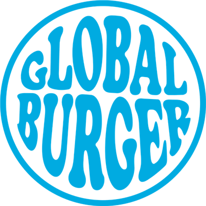

años de tradición gastronómica
años desde que la marca renació
En la adversidad recordamos una gran verdad: sabemos hacer comida extraordinariamente buena. Nos instalamos en la Av. Bolívar de Maracay para revolucionar la comida rápida con la más alta calidad.
Deleitar a nuestros clientes con una experiencia única: la rapidez de la comida rápida con el sabor y la calidad de una preparación gourmet, superando sus expectativas en cada visita.
Ser una marca referente a nivel nacional, llevando nuestra propuesta de calidad a cada rincón del país, con la pasión de nuestro equipo y excelencia operativa.

Manual de Bienvenida03